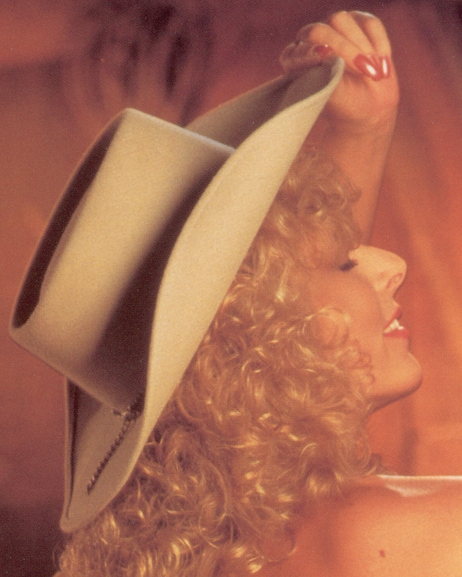

About the author
Brandy
Alexandre
First-time author. Long-time observer. Consummate survivor.

The short version
Brandy Alexandre was born and raised in Southern California. She sought out the adult movie industry, eventually working with John "Buttman" Stagliano during the launch of Evil Angel Video.
She went on to become the first woman to simultaneously write, produce, direct, and star in two of her own features at the height of the VHS boom. But standing up for herself came with a price.
Effectively blacklisted, she fought to reclaim a life outside the industry and build new relationships with mixed results. Never married, she lives in Las Vegas, Nevada, with two cats, Tyson and Sagan—affectionately called The Astrophysikitties.
On the writing
Despite my best efforts, I was always on the outside looking in. Getting into porn isn't like "as seen on TV." No one had to drug us or stalk us at bus stations. You had to work at it unless you were a superstar. I finally had to write it all down. It was all just messier, funnier, and weirder than Hollywood could dream up. I didn't keep journals, but I don't easilyforget. Just ask any of my ex-boyfriends!
— Brandy Alexandre
A life in brief
Born in Huntington Beach, California, in a Mormon family.
Left home and was introduced to porn agent and writer, Bill Margold.
Became roommates with Bill Margold.
Made first non-sex video, Showdown at the Erogenous Zone.
Made first hardcore video, Best Friends, Part II.
Met director, John "Buttman" Stagliano.
Wrote, produced, directed, starred in Cheeks 5: Cop A Feel.
Wrote, produced, directed, starred in Best Butt(e) in the West.
Never worked again.
Fired from Forest Lawn Memorial-Parks when porn past exposed.
Began writing SHOT ON VIDEO.
The manuscript is complete.
The full manuscript is available upon request for established agents and publishers.
Request the Manuscript